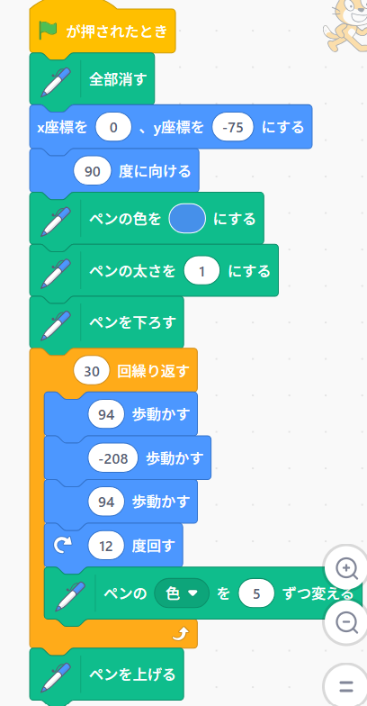
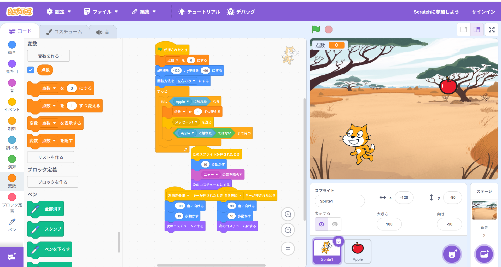

1週目のレポート ： 公大高専１年実習I-1
1a班17番 小林理人
第1週目
1-1 サイエンスアート

1.内容
scratchという環境でプログラミングをし、線画を描くプログラムを作った。
数値とプログラムを変えて自分だけのラインアートを作れた。
2.感想
難易度はそこまで高いと思わなかった。好みの模様が作れると面白い。
計算ブロックを駆使して3D描写をするプログラムも作れるらしい。
1-2 ゲーム

1.内容
画面上のリンゴが下に進んで、猫にあたると点数という名前の変数を変える非常にシンプルなゲームのプログラムを作る。
2.感想
プログラミングは最初の座標に移動するというプログラムをしっかり入れなければならなかった。
授業の指示通りに進めたのでしっかり目的のものが作れた。
1-3 ホームページ作成
私のホームページ
1.内容
githubという開発者向けのウェブサイトを使って、自分のホームページを作る体験をする。
テンプレートの文字を変えることで自分のホームページになる。
2.感想
githubは初めて使ったので少し戸惑ったが、無事に授業の目標を達成できた。
誰でもホームページが作れることに感心した。
各ページへのリンク
1週目のレポート
2週目のレポート
3週目のレポート
私のホームページ